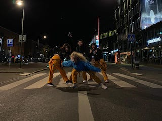
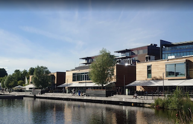

What to do in Jönköping
One of the few things everybody should do in the beginningis to admire the beauty of the city, and the best way of achieving that is by doing these activities:Having a picnic by the lake.
Wonder the city with a bike.
Get the chance of meeting new students and creating friendships by spending some time at the Student's House.
One of the few things everybody should do in the beginningis to admire the beauty of the city, and the best way of achieving that is by doing these activities:
Fun things to do
For the students who are always looking for something fun to do I must mention some places like:Akademien which takes place on every Wednesday and only students are allowed.
Shooters which is free for students on every Monday.
For something peaceful, visiting the museums in the area is always a good idea.

For the students who are always looking for something fun to do I must mention some places like:
Enjoy a good meal
If you want to enjoy a meal out with your friends then you have a good variety of restaurants where you can choose from, such as:Basilika
La Vue
Nuevo elegante osteria AB
Bryggan Café & Bistro
Mr Rice
Restaurang N.E.O.

If you want to enjoy a meal out with your friends then you have a good variety of restaurants where you can choose from, such as: